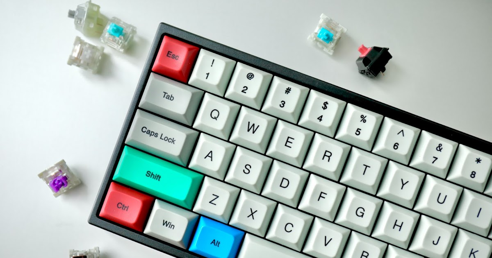

Tip
VSCode is my primary code editor, and mastering its keyboard shortcuts can significantly enhance productivity. Below is a comprehensive list of essential keyboard shortcuts setup for both Mac and Windows users.
Shortcut
General Commands
| Action | Mac | Windows |
|---|---|---|
| Command Palette | Cmd + Shift + P |
Ctrl + Shift + P |
| Open Settings | Cmd + , |
Ctrl + , |
| Keyboard Shortcuts | Cmd + K Cmd + S |
Ctrl + K Ctrl + S |
| Toggle Sidebar | Cmd + B |
Ctrl + B |
| Full Screen | Cmd + Ctrl + F |
F11 |
| Open File | Cmd + P |
Ctrl + P |
| New Window | Cmd + Shift + N |
Ctrl + Shift + N |
| Close Window | Cmd + Shift + W |
Ctrl + Shift + W |
Terminal Management
| Terminal Management | ||
|---|---|---|
| Toggle Terminal | Cmd + ` |
Ctrl + ` |
| Create New Terminal | Cmd + Shift + ` |
Ctrl + Shift + ` |
| Navigate Between Terminals | Cmd + Shift + [ / ] |
Ctrl + PgUp / PgDn |
| Split Terminal | Cmd + \ |
Ctrl + \ |
| Navigate Between Split Terminal | Cmd + Option + ← / → |
Alt + ↑ / ↓ |
Editor Management
| Editor Management | ||
|---|---|---|
| Close Tab | Cmd + W |
Ctrl + W |
| Split Editor | Cmd + \ |
Ctrl + \ |
| Navigate Tabs | Cmd + Shift + Tab |
Ctrl + Shift + Tab |
| Navigate Tab Groups | Cmd + 1 / 2 / 3 |
Ctrl + 1 / 2 / 3 |
Text Manipulation
| Text Manipulation | ||
|---|---|---|
| Add Multiple Cursors | Cmd + Option + ↑ / ↓ |
Ctrl + Alt + ↑ / ↓ |
| Scroll horizontal | Shift + Mouse wheel |
Shift + Mouse wheel |
| Select Text | Cmd + Shift + ↑ / ↓ |
Ctrl + Shift + ↑ / ↓ |
| Move Line Up/Down | Option + ↑ / ↓ |
Alt + ↑ / ↓ |
| Copy Line Up/Down | Shift + Option + ↑ / ↓ |
Shift + Alt + ↑ / ↓ |
| Select Word | Cmd + D |
Ctrl + D |
| Select Current Line | Cmd + L |
Ctrl + L |
| Select All Occurrences | Cmd + Shift + L |
Ctrl + Shift + L |
| Delete Current Line | Cmd + Shift + K |
Ctrl + Shift + K |
| Delete Word Backward | Option + Backspace |
Ctrl + Backspace |
| Comment/Uncomment Lines | Cmd + / |
Ctrl + / |
Code Formatting
| Code Formatting | ||
|---|---|---|
| Code Folding | Cmd + Option + [ / ] |
Ctrl + Shift + [ / ] |
| Indent/Outdent Lines | Cmd + [ / ] |
Ctrl + [ / ] |
| Format Selected Code | Cmd + K Cmd + F |
Ctrl + K Ctrl + F |
| Format Document | Shift + Option + F |
Shift + Alt + F |